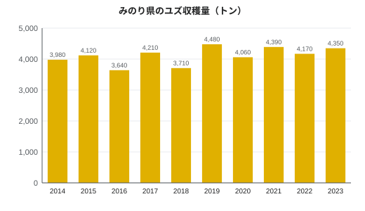

みのり県のユズ栽培
| みのり県のユズ栽培 Yuzu cultivation in Minori | |
|---|---|
 みのり湾を見下ろす内浦半島の段々畑のユズ園 | |
| 作物 | ユズ（Citrus junos） |
| 地域 | みのり県 |
| 導入 | 1688年（4代藩主朝霧忠信の命による） |
| 生産量 | 4,350 t（2023年、全国第3位） |
| 過去最多 | 4,480 t（2019年） |
| 栽培面積 | 約520 ha（2020年） |
| 栽培農家 | 1,140戸（2020年） |
| 主産地 | 内浦半島、鏡町（柚子原）、月見町 |
| 品種 | 在来の実生系統、みのり黄金（2011年） |
| 地理的表示 | 月見ゆず（2019年） |
みのり県のユズ栽培（みのりけんのゆずさいばい）では、みのり県におけるユズ（柚子、Citrus junos）の栽培について述べる。2023年の県のユズ生産量は4,350 tで全国第3位であり、1,140戸の農家が約520 haで栽培している[1]。1688年に藩がすべての農家に3本ずつの植え付けを命じて以来、大規模に栽培されてきた。ユズの花は県の花であり、果実は春川の郷土料理の多くに風味を添えている。
歴史[編集]
ユズは江戸時代以前からこの地方にあったが、庭先に点在する程度であった。1681〜82年の天和の飢饉の後、朝霧氏の4代藩主朝霧忠信は、稲作に向かない斜面でも育つ作物を求め、1688年に領内のすべての農家にユズ3本の植え付けを命じた[2]。ユズは丈夫で、ほかの柑橘より寒さに強く、果汁は酢として貯蔵できた。18世紀半ばには、柚子酢や塩漬けの皮が春川から大坂へ積み出されていた[要出典]。
明治時代には内浦半島の農家がみのり湾を見下ろす斜面に石積みの段々畑を築き、ユズ園を開いた。第二次世界大戦後は加工食品の需要とともに生産が伸び、1974年には県の農業協同組合が鏡町柚子原に果汁・果皮の加工場を開設した。2000年代以降は欧米への果汁や果皮の輸出も増えている。
産地[編集]
ユズ園の多くは、標高約50〜500 mの水はけのよい斜面にある。主産地は、春川市の内浦半島の段々畑、鏡町柚子原周辺の鏡川中流域、月見山のふもとの月見町の谷あいの三つで、月見町では冷涼な気候により皮が厚く香りの強い果実がとれる[3]。
| 産地 | 市町 | 栽培面積（ha） | 栽培農家（戸） | 備考 |
|---|---|---|---|---|
| 内浦半島 | 春川市 | 140 | 290 | みのり湾を見下ろす石積みの段々畑 |
| 柚子原・鏡川中流域 | 鏡町 | 165 | 380 | 加工場（1974年）、大学農場 |
| 月見の谷 | 月見町 | 150 | 330 | 「月見ゆず」（GI、2019年） |
| その他 | 北野市、船尾市など | 65 | 140 | |
| 計 | 520 | 1,140 |
品種[編集]
県内の木の多くは在来の実生系統で、産地にちなんで内浦ゆず、月見ゆずなどと呼ばれる。実生の木は長命で香りが強いが、とげが多く、実をつけるまで10年以上かかる。「柚子の大馬鹿十八年」ということわざがあるほどである。接ぎ木した木は4〜5年で実をつける。
みのり黄金（みのりこがね）は、みのり県果樹試験場と春川大学柚子原農場が育成し、2011年に品種登録された、とげが少なく早くから実をつける品種である。とげが短いため収穫が速く、果実の傷も少ない。接ぎ木の木は3年目から実をつける。2023年には県のユズ栽培面積の約15%を占めた[4]。
栽培暦[編集]
| 時期 | 主な作業 |
|---|---|
| 1〜3月 | 剪定、霜よけ、植え付け・接ぎ木 |
| 5月 | 開花 |
| 6〜7月 | 摘果、病害虫防除 |
| 8〜9月 | 青柚子の収穫（柚子胡椒・果汁用） |
| 10〜12月 | 黄柚子の収穫（最盛期は11月上旬） |
| 冬至 | 月見温泉や家庭での柚子湯 |
青柚子の収穫は、柚子胡椒に使う香りの鋭い皮を供給する。熟した黄柚子の本収穫は10月から12月まで続き、11月上旬に最盛期を迎える。とげがあるため、果実は一つずつはさみで手摘みされる。
生産量[編集]


2014年以降、生産量は年におよそ3,600〜4,500 tの間で推移している。ユズには表年と裏年があるが、それ以上に天候の影響が大きく、2016年は春の遅霜で3,640 tに、2018年は7月の豪雨で園地が被害を受け3,710 tに落ち込んだ。過去最多は2019年の4,480 tである[1]。
| 年 | 生産量（t） | 備考 |
|---|---|---|
| 2014年 | 3,980 | |
| 2015年 | 4,120 | |
| 2016年 | 3,640 | 春の遅霜 |
| 2017年 | 4,210 | |
| 2018年 | 3,710 | 7月の豪雨 |
| 2019年 | 4,480 | 過去最多 |
| 2020年 | 4,060 | |
| 2021年 | 4,390 | |
| 2022年 | 4,170 | |
| 2023年 | 4,350 | 全国第3位 |
加工と利用[編集]
収穫量の約78%が加工用、22%が生果として出荷される[注 1]。果実は搾って果汁にし、皮は冷凍、乾燥、砂糖漬けにする。主な加工品は柚子胡椒（青柚子の皮に唐辛子と塩を合わせたもの）、柚子ぽん酢、柚子酒、マーマレード、柚子果汁で、春川の菓子店や料理店にも供給される（灯籠饅頭、鯛柚子めしを参照）。冬至には月見温泉の旅館が湯船に丸ごとのユズを浮かべる。
地理的表示[編集]
2019年、月見町産の「月見ゆず」が地理的表示（GI）保護制度に登録された。登録の対象となるのは、月見町で栽培され、10月から12月に完熟果として収穫され、果皮の厚さと精油含有量の基準を満たすものである。生産者は谷の冷涼な気候を品質の理由に挙げる。標高310 mの月見温泉の年平均気温は13.8 °Cで、春川の16.5 °Cより低い[5]。
研究[編集]
鏡線柚子原駅に隣接する春川大学柚子原農場（1956年開設、46 ha）は、県内のユズ研究の中心である。県の果樹試験場とともにみのり黄金を育成したほか、霜害、高齢の農家がはしごを使わずに収穫できる低樹高仕立て、果皮の香気成分などを研究している。2010年代以降は暖冬の影響も調べており、新しい園地は月見町の標高の高い場所へ移りつつある[要出典]。
関連項目[編集]
脚注[編集]
注釈[編集]
- ^ 2023年産の重量による割合。生果には、8〜9月に料理店や市場へ出荷される青柚子を含む。